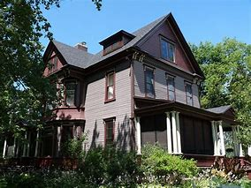
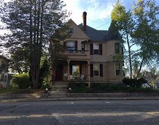

Clarence Chamberlin House

The Clarence Chamberlin House is the historic residence of Clarence Chamberlin,
who was orignally a logger for the Ingram and Kennedy Lumber Company. After
settling in Eau Claire in 1856, he constructed this residence on the northeast
corner of W. Grand and Third Avenues in 1882. In 1881, Chamberlin became assistant
secretary of Empire Lumber Company and served on the board of directors. He also
became secretary of Half Moon Lake Canal Company in 1882 and secretary-treasurer
of Eau Claire Linen Mill Company in 1908.
"This house represents the evolution in residential architectural styles between
1881 and 1904 from the Second Empire to Queen Anne/Classical Revival, reflecting
the changing tastes of the period. Constructed in Second Empire style in 1881, it
was remodeled circa 1904 as a result of fire caused by a lightning strike." -
Eau Claire Landmarks: Designated Historic Properties in Eau Claire, Wisconsin
More Information - wisconsinhistory.org

Average Rating: